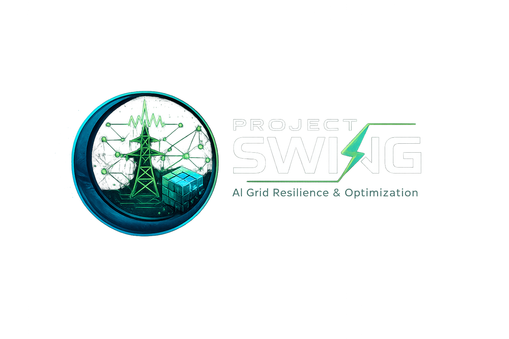

The cognitive intelligence of Project SWING.
Run the full forecast → risk → decision → validation pipeline. Review and approve/reject proposed actions.
Conversational access to the AI, grounded in live GRI, demand, and contingency status. Doesn't execute actions -- discussion only.
Multi-horizon TFT/LightGBM forecast charts (15min/1h/6h/24h) with quantile bands.
See which grid/action combinations have a trained RL policy active right now, vs. still falling back to bisection search.